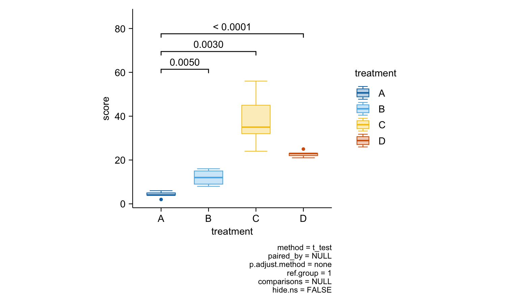

The goal of tidyplots is to streamline the creation of publication-ready plots for scientific papers. It allows to gradually add and refine plot elements, and provides precise control over composition, style, and absolute sizes. By consistent use of the pipe %>% it simplifies the construction of advanced plotting pipelines.
Disclaimer
This package is still in early development. Expect user-facing and breaking changes. I would not recommend to use this package in production yet.
Feel free to report bugs and suggest features here.
Usage
Here are some examples. The full documentation can be found here.
library(tidyplots)
study %>%
tidyplot(x = treatment, y = score, color = treatment) %>%
add_mean_bar(alpha = 0.3) %>%
add_sem_bar() %>%
add_data_points_beeswarm()
energy %>%
tidyplot(x = year, y = power, color = energy_source) %>%
add_barstack_absolute()
energy %>%
dplyr::filter(year %in% c(2005, 2010, 2015, 2020)) %>%
tidyplot(y = power, color = energy_source) %>%
add_donut() %>%
split_plot(by = year)
energy_week %>%
tidyplot(x = date, y = power, color = energy_source) %>%
add_areastack_absolute()
energy_week %>%
tidyplot(x = date, y = power, color = energy_source) %>%
add_areastack_relative()
study %>%
tidyplot(x = group, y = score, color = dose) %>%
add_mean_bar(alpha = 0.3) %>%
add_mean_dash() %>%
add_mean_value()
time_course %>%
tidyplot(x = day, y = score, color = treatment, dodge_width = 0) %>%
add_mean_line() %>%
add_mean_dot() %>%
add_sem_ribbon()
study %>%
tidyplot(x = treatment, y = score, color = treatment) %>%
add_boxplot() %>%
add_stats_pvalue(ref.group = 1)
gene_expression %>%
dplyr::filter(external_gene_name %in% c("Apol6", "Col5a3", "Vgf", "Bsn")) %>%
tidyplot(x = condition, y = expression, color = sample_type) %>%
add_mean_dash() %>%
add_sem_bar() %>%
add_data_points_beeswarm() %>%
add_stats_asterisks(include_info = FALSE) %>%
remove_x_axis_title() %>%
split_plot(by = external_gene_name)
study %>%
tidyplot(x = treatment, y = score, color = treatment) %>%
add_mean_bar(alpha = 0.3) %>%
add_sem_bar() %>%
add_data_points_beeswarm() %>%
view_plot(title = "Default color scheme: metro") %>%
adjust_colors(colors_discrete_seaside) %>%
view_plot(title = "Alternative color scheme: seaside")